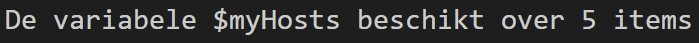
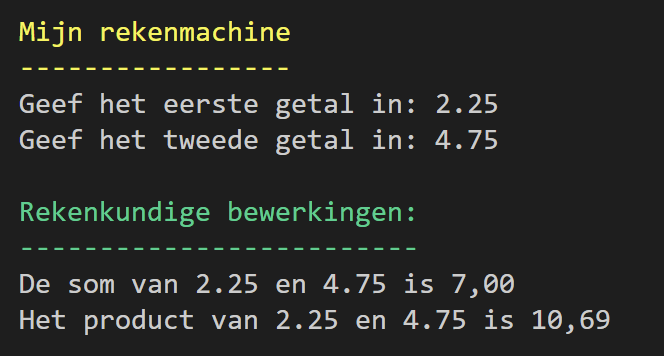
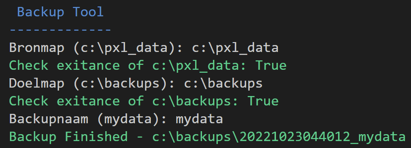
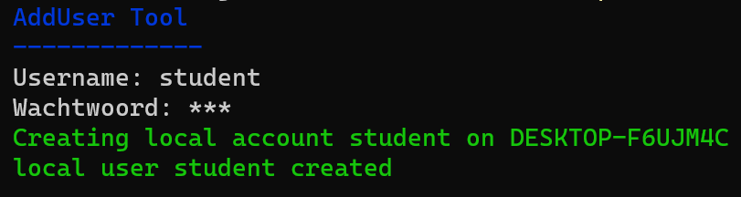

1. Variabelen en tekenreeksen
1.1 Begrippen
Wat is een variabele in PowerShell? Benoem de drie hoofdonderdelen waaruit een variabele bestaat.
Een variabele is een naam die verwijst naar een waarde (een object). Je schrijft altijd een
$ voor de naam, en met = ken je een waarde toe.De drie hoofdonderdelen:
- Naam: bv.
$myFirstName(begint met$). - Waarde: de inhoud, bv.
'Angelo'. - Datatype: het soort waarde, bv.
String,Int32,Double. Op te vragen met.GetType().
$myFirstName = 'Angelo'Extra begrippen uit de Course (hoofdstuk 07):
- Typed variabele: met
[int]$age = 25leg je het datatype vast.$age = 'abc'geeft dan een fout, omdat'abc'geen geheel getal is. - De variabele zelf bekijken:
Get-Variable -Name myFirstNametoont naam en waarde. - Een variabele verwijderen:
Remove-Variable -Name myFirstName. Daarna is$myFirstNameleeg ($null). - Volledige typenaam:
$myFirstName.GetType().FullName→System.String.
Get-Variable en Remove-Variable schrijf je de naam zonder $.
1.2 Voornaam als object
Maak $myFirstName en ken je voornaam toe. Voer daarna deze onderzoeken uit:
- Bewijs dat de waarde een object is en toon het datatype.
- Toon alle properties en geef van minstens twee properties een concreet voorbeeld.
- Toon alle methods en tel hoeveel methods beschikbaar zijn.
- Toon de lengte van je voornaam.
- Toon je voornaam in hoofdletters zonder de opgeslagen waarde te wijzigen.
- Toon alleen de eerste en de laatste letter.
$myFirstName = 'Angelo'$myFirstName.GetType()→ NameString, BaseTypeSystem.Object. De waarde is dus een object van het typeString.
Alleen de naam:$myFirstName.GetType().Name→String$myFirstName | Get-Member -MemberType Property, ParameterizedProperty
Een string heeft twee properties:Chars(MemberTypeParameterizedProperty) enLength(MemberTypeProperty).
Let op:-MemberType Propertiestoont alleenLength, omdatCharseenParameterizedPropertyis.
Length→$myFirstName.Length→6(aantal tekens)
Chars→$myFirstName.Chars(0)→A(het teken op positie 0)$myFirstName | Get-Member -MemberType Method
Tellen:($myFirstName | Get-Member -MemberType Method).Count→52$myFirstName.Length→6$myFirstName.ToUpper()→ANGELO
$myFirstName→ nog steedsAngelo. Een method geeft een nieuwe waarde terug; de variabele zelf verandert niet.$myFirstName[0]→A(index 0 = eerste letter)
$myFirstName[-1]→o(index -1 = laatste letter)
$myFirstName.GetType().FullName→System.String(de volledige .NET-typenaam)- Waarde van alle properties in één keer:
$myFirstName | Select-Object -Property *→Length : 6 - Alleen het aantal methods:
($myFirstName | Get-Member -MemberType Method | Measure-Object).Count→52 $myFirstName.Length→6$myFirstName.ToUpper()→ANGELO; de variabele zelf blijftAngelo.- Eerste en laatste letter in één expressie:
$myFirstName[0, -1]→Aeno
Samen als één tekst:$myFirstName[0, -1] -join ''→Ao
Met een method:$myFirstName.Substring(0, 1)→A
1.3 Volledige naam
- Maak
$myLastName. - Bouw
$myNameop uit voornaam, één spatie, achternaam en bewust nog één spatie achteraan. - Toon de waarde en lengte.
- Verwijder de achterste spatie uit de opgeslagen variabele en toon opnieuw de lengte.
$myLastName = 'Switon'$myName = $myFirstName + ' ' + $myLastName + ' '$myName → Angelo Switon (met een spatie achteraan)$myName.Length → 14$myName = $myName.Trim()$myName.Length → 13.Trim() verwijdert de spaties vooraan en achteraan. Omdat we het resultaat opnieuw in $myName opslaan, is de opgeslagen waarde nu echt aangepast.Met een tekst tussen dubbele aanhalingstekens (de variabelen worden ingevuld):
$myName = "$myFirstName $myLastName "$myName.Length → 14Alleen de spatie achteraan verwijderen:
$myName = $myName.TrimEnd()$myName.Length → 13.Trim() verwijdert spaties vooraan én achteraan, .TrimEnd() alleen achteraan en .TrimStart() alleen vooraan. Hier is .TrimEnd() het meest precies: er staat alleen achteraan een spatie te veel.
2. Arrays
Maak $myHosts met deze vijf waarden:
Server01
Server02
WorkstationA
WorkstationB
WorkstationCToon vervolgens:
- de volledige inhoud;
- het aantal items;
- de eerste twee items met één expressie;
- de laatste twee items met één expressie.
Gebruik een geïnterpoleerde tekenreeks om het aantal te melden.

$myHosts = 'Server01', 'Server02', 'WorkstationA', 'WorkstationB', 'WorkstationC'$myHosts→ toont de vijf waarden$myHosts.Count→5$myHosts[0..1]→Server01,Server02$myHosts[-2..-1]→WorkstationB,WorkstationC
"De variabele `$myHosts beschikt over $($myHosts.Count) items"→
De variabele $myHosts beschikt over 5 itemsDubbele aanhalingstekens vullen variabelen in.
$() berekent een expressie (hier .Count) binnen de tekst. Het backtick-teken ` vóór $myHosts zorgt dat de naam letterlijk getoond wordt in plaats van de inhoud.Hetzelfde met
Select-Object (Course, hoofdstuk 03):$myHosts | Select-Object -First 2 → Server01, Server02$myHosts | Select-Object -Last 2 → WorkstationB, WorkstationCEen array filteren met
-like: $myHosts -like 'Workstation*' → de drie workstationsEen item toevoegen:
$myHosts += 'Server03' → $myHosts.Count is nu 6De melding met
-f (format-operator):'De variabele $myHosts beschikt over {0} items' -f $myHosts.CountTussen enkele aanhalingstekens wordt
$myHosts niet ingevuld; {0} wordt vervangen door de waarde na -f.
3. Procesobjecten in een variabele
LET OP: Deze oefening start Rekenmachine en stopt alle gevonden Rekenmachine-processen. Sla eventueel werk op, voer dit alleen op een oefensysteem uit en controleer vóór en na het stoppen met
Get-Process.
- Start Windows Rekenmachine en laat de toepassing open.
- Bewaar alle actieve processen in
$myProcesen toon de inhoud. - Bewijs vanuit de bestaande variabele dat ze een object of verzameling objecten bevat.
- Toon de properties en methods.
- Toon alleen de procesnamen.
- Toon de eerste drie processen, aflopend gesorteerd op
StartTime, met alleenId,ProcessNameenStartTime. - Filter vanuit
$myProcesde Rekenmachine-processen en stop ze.
Start-Process calc$myProces = Get-Process
$myProces$myProces.GetType()→Object[]: een array (verzameling) van objecten.
$myProces | Get-Member→ TypeNameSystem.Diagnostics.Process: elk item is een procesobject.$myProces | Get-Member -MemberType Property
$myProces | Get-Member -MemberType Method$myProces | Select-Object ProcessName$myProces | Sort-Object StartTime -Descending | Select-Object -First 3 Id, ProcessName, StartTime$myProces | Where-Object { $_.ProcessName -like '*calc*' } | Stop-Process
Controle:Get-Process *calc*→ geen resultaat meer.
In Windows 11 heet het proces van RekenmachineCalculatorApp; daarom filteren we met-like '*calc*'.
Start-Process calc$myProces = Get-Process→$myProces.Counttoont hoeveel processen er bewaard zijn.$myProces.GetType().FullName→System.Object[](een array)
Eén element:$myProces[0].GetType().FullName→System.Diagnostics.Process$myProces | Get-Member -MemberType Propertiesen$myProces | Get-Member -MemberType Method- Alleen de namen, als tekst:
$myProces.ProcessNameof$myProces | Select-Object -ExpandProperty ProcessName - Met
-Top(Course, hoofdstuk 03):$myProces | Sort-Object StartTime -Descending -Top 3 | Select-Object Id, ProcessName, StartTime - Eerst bekijken, dan stoppen:
$myProces | Where-Object ProcessName -like '*calc*' | Stop-Process -WhatIf
$myProces | Where-Object ProcessName -like '*calc*' | Stop-Process
$myProces is een momentopname. Na het stoppen staat Rekenmachine nog altijd in de variabele. Controleer daarom met een nieuwe Get-Process -Name CalculatorApp.
4. Script: Rekenen.ps1
Maak scripts/Rekenen.ps1:
- vraag twee getallen via
Read-Host; - accepteer kommagetallen door beide waarden expliciet naar
doubleom te zetten; - bereken som en product;
- toon beide resultaten met precies twee cijfers na het decimaalteken;
- voeg comment-based help toe.

scripts/Rekenen.ps1<#
.SYNOPSIS
Een eenvoudige rekenmachine.
.DESCRIPTION
Vraagt twee getallen, zet ze om naar double en toont de som en het product
met twee cijfers na het decimaalteken.
.NOTES
Author: Angelo Switon (PXL Student)
.EXAMPLE
./scripts/Rekenen.ps1
#>
Write-Host "Mijn rekenmachine" -ForegroundColor Yellow
Write-Host "-----------------" -ForegroundColor Yellow
# Read-Host geeft tekst terug; een komma vervangen we door een punt
$invoer1 = Read-Host "Geef het eerste getal in"
$invoer2 = Read-Host "Geef het tweede getal in"
# Expliciet omzetten naar double (casting)
[double]$getal1 = $invoer1.Replace(',', '.')
[double]$getal2 = $invoer2.Replace(',', '.')
# Berekenen
$som = $getal1 + $getal2
$product = $getal1 * $getal2
# Twee cijfers na het decimaalteken
$somTekst = '{0:N2}' -f $som
$productTekst = '{0:N2}' -f $product
Write-Host ""
Write-Host "Rekenkundige bewerkingen:" -ForegroundColor Green
Write-Host "-------------------------" -ForegroundColor Green
Write-Host "De som van $getal1 en $getal2 is $somTekst"
Write-Host "Het product van $getal1 en $getal2 is $productTekst"[double] zet de tekst van Read-Host om naar een kommagetal. '{0:N2}' -f toont het resultaat met precies twee cijfers na het decimaalteken.Let op:
[double]'2,25' geeft 225. Daarom vervangen we eerst een komma door een punt met .Replace(',', '.'), zoals in de Course (hoofdstuk 08).Extra bewerkingen uit de Course (hoofdstuk 08) en afronden met
[math]::Round():<#
.SYNOPSIS
Een uitgebreidere rekenmachine.
.DESCRIPTION
Vraagt twee getallen, zet ze om naar double en toont de som, het verschil,
het product en het quotiënt met twee cijfers na het decimaalteken.
.NOTES
Author: Angelo Switon (PXL Student)
.EXAMPLE
.\scripts\Rekenen.ps1
#>
Write-Host 'Mijn rekenmachine' -ForegroundColor Yellow
Write-Host '-----------------' -ForegroundColor Yellow
# Komma vervangen door een punt, daarna omzetten naar double
[double]$getal1 = (Read-Host 'Geef het eerste getal in').Replace(',', '.')
[double]$getal2 = (Read-Host 'Geef het tweede getal in').Replace(',', '.')
$som = $getal1 + $getal2
$verschil = $getal1 - $getal2
$product = $getal1 * $getal2
$quotient = $getal1 / $getal2
Write-Host ''
Write-Host 'Rekenkundige bewerkingen:' -ForegroundColor Green
Write-Host '-------------------------' -ForegroundColor Green
Write-Host ('De som van {0} en {1} is {2:N2}' -f $getal1, $getal2, $som)
Write-Host ('Het verschil van {0} en {1} is {2:N2}' -f $getal1, $getal2, $verschil)
Write-Host ('Het product van {0} en {1} is {2:N2}' -f $getal1, $getal2, $product)
Write-Host ('Het quotiënt van {0} en {1} is {2:N2}' -f $getal1, $getal2, $quotient)
Write-Host ('Afgerond met [math]::Round: {0}' -f [math]::Round($product, 2)){2:N2} toont het derde getal na -f met twee decimalen.Verschil tussen de twee manieren:
'{0:N2}' -f geeft tekst (met scheidingstekens, bv. 2.245,69); [math]::Round(x, 2) geeft een getal waarmee je verder kan rekenen.Let op: deel je door
0, dan toont PowerShell ∞ (oneindig) voor een double. Dat opvangen komt pas in de les over voorwaarden.
5. Script: MakeBackup.ps1
LET OP: Voer deze oefening alleen op een oefensysteem uit. Het script leest uit
C:\pxl_dataen schrijft ZIP-bestanden naarC:\backups. Controleer beide paden en verwijder testgegevens en testback-ups na beoordeling.
Maak eerst C:\pxl_data met enkele testbestanden en C:\backups.
Maak daarna scripts/MakeBackup.ps1:
- Vraag bronmap, doelmap en back-upnaam.
- Toon voor beide mappen het resultaat van
Test-Path. - Maak met
Compress-Archiveeen ZIP-bestand. - Gebruik
yyyyMMddHHmmss_naam.zipals bestandsnaam. - Toon het volledige pad van de gemaakte back-up.
- Voeg comment-based help toe.

Voorbereiding:
New-Item -Path C:\pxl_data -ItemType DirectoryNew-Item -Path C:\pxl_data -Name test1.txt -ItemType FileNew-Item -Path C:\pxl_data -Name test2.txt -ItemType FileNew-Item -Path C:\backups -ItemType Directoryscripts/MakeBackup.ps1<#
.SYNOPSIS
Maakt een ZIP-back-up van een map.
.DESCRIPTION
Vraagt een bronmap, een doelmap en een back-upnaam, controleert beide mappen
met Test-Path en maakt een ZIP-bestand met de naam yyyyMMddHHmmss_naam.zip.
.NOTES
Author: Angelo Switon (PXL Student)
.EXAMPLE
./scripts/MakeBackup.ps1
#>
Write-Host " Backup Tool" -ForegroundColor Blue
Write-Host "------------" -ForegroundColor Blue
# Bronmap vragen en controleren
$bronmap = Read-Host "Bronmap (c:\pxl_data)"
Write-Host "Check existence of $($bronmap): $(Test-Path $bronmap)" -ForegroundColor Green
# Doelmap vragen en controleren
$doelmap = Read-Host "Doelmap (c:\backups)"
Write-Host "Check existence of $($doelmap): $(Test-Path $doelmap)" -ForegroundColor Green
# Naam van de back-up
$backupnaam = Read-Host "Backupnaam (mydata)"
# Bestandsnaam: yyyyMMddHHmmss_naam.zip
$datum = Get-Date -Format 'yyyyMMddHHmmss'
$bestandsnaam = $datum + '_' + $backupnaam + '.zip'
$zipPad = Join-Path -Path $doelmap -ChildPath $bestandsnaam
# ZIP-bestand maken
Compress-Archive -Path $bronmap -DestinationPath $zipPad
Write-Host "Backup Finished - $zipPad" -ForegroundColor GreenGet-Date -Format 'yyyyMMddHHmmss' geeft de datum en tijd als tekst, bv. 20261114135540. Daarna plakken we _, de naam en .zip eraan vast.Controle:
Get-ChildItem C:\backups → bv. 20261114135540_mydata.zip<#
.SYNOPSIS
Maakt een ZIP-back-up van een map.
.DESCRIPTION
Vraagt een bronmap, een doelmap en een back-upnaam, toont voor beide mappen
het resultaat van Test-Path en maakt een ZIP-bestand yyyyMMddHHmmss_naam.zip.
.NOTES
Author: Angelo Switon (PXL Student)
.EXAMPLE
.\scripts\MakeBackup.ps1
#>
Write-Host ' Backup Tool' -ForegroundColor Blue
Write-Host '------------' -ForegroundColor Blue
$bronmap = Read-Host 'Bronmap (c:\pxl_data)'
$doelmap = Read-Host 'Doelmap (c:\backups)'
$backupnaam = Read-Host 'Backupnaam (mydata)'
Write-Host "Check existence of $($bronmap): $(Test-Path -Path $bronmap -PathType Container)" -ForegroundColor Green
Write-Host "Check existence of $($doelmap): $(Test-Path -Path $doelmap -PathType Container)" -ForegroundColor Green
$zipPad = Join-Path -Path $doelmap -ChildPath ('{0}_{1}.zip' -f (Get-Date -Format 'yyyyMMddHHmmss'), $backupnaam)
Compress-Archive -Path $bronmap -DestinationPath $zipPad
Write-Host "Backup Finished - $zipPad" -ForegroundColor Green
Get-Item -Path $zipPad | Select-Object Name, Length, LastWriteTime-PathType Container controleert dat het echt mappen zijn. De bestandsnaam wordt in één keer opgebouwd met -f. De laatste regel toont het gemaakte ZIP-bestand met zijn grootte, als bewijs dat de back-up gelukt is.Eerst testen zonder iets te maken:
Compress-Archive -Path C:\pxl_data -DestinationPath C:\backups\test.zip -WhatIf
6. Extra: script AddUser.ps1
LET OP: Deze extra opdracht vereist beheerdersrechten en maakt een lokale Windows-gebruiker. Gebruik uitsluitend een oefensysteem, controleer het resultaat met
Get-LocalUseren verwijder de testgebruiker nadien metRemove-LocalUser. Voeg de gebruiker niet toe aan de groep Administrators.
Maak scripts/AddUser.ps1:
- vraag een gebruikersnaam en volledige naam;
- vraag het wachtwoord als
SecureString; - maak de lokale gebruiker met
New-LocalUser; - handel fouten af met
try/catch; - toon een duidelijke succes- of foutmelding;
- voeg comment-based help toe.

scripts/AddUser.ps1 (uitvoeren als administrator)<#
.SYNOPSIS
Maakt een lokale Windows-gebruiker.
.DESCRIPTION
Vraagt een gebruikersnaam, volledige naam en wachtwoord (als SecureString)
en maakt de lokale gebruiker met New-LocalUser. Fouten worden opgevangen
met try/catch. Uitvoeren als administrator.
.NOTES
Author: Angelo Switon (PXL Student)
.EXAMPLE
./scripts/AddUser.ps1
#>
Write-Host "AddUser Tool" -ForegroundColor Blue
Write-Host "------------" -ForegroundColor Blue
$username = Read-Host "Username"
$fullName = Read-Host "Volledige naam"
$password = Read-Host "Wachtwoord" -AsSecureString
try {
Write-Host "Creating local account $username on $env:COMPUTERNAME" -ForegroundColor Green
New-LocalUser -Name $username -FullName $fullName -Password $password -ErrorAction Stop
Write-Host "local user $username created" -ForegroundColor Green
}
catch {
Write-Host "An error occurred: $_" -ForegroundColor Red
}-AsSecureString zorgt dat het wachtwoord niet leesbaar getoond of bewaard wordt. -ErrorAction Stop zorgt dat een fout (bv. de gebruiker bestaat al) door catch opgevangen wordt. $_ bevat in catch de foutmelding.Controleren en opruimen:
Get-LocalUser -Name studentRemove-LocalUser -Name studentControle van het wachtwoord-type en van de gemaakte gebruiker:
$password = Read-Host 'Wachtwoord' -AsSecureString$password.GetType().Name → SecureString: het wachtwoord staat niet als leesbare tekst in het geheugen.Get-LocalUser -Name student | Select-Object Name, FullName, Enabled → de gebruiker bestaat en is actief.try/catch wordt hier gebruikt omdat de opdracht erom vraagt. In de Course komt het pas in hoofdstuk 12 (Exception handling). -ErrorAction Stop is nodig: zonder die parameter springt een gewone fout van New-LocalUser niet naar catch.Opruimen en controleren:
Remove-LocalUser -Name studentGet-LocalUser -Name student → een fout: de gebruiker bestaat niet meer.
Eindcontrole
- Alle antwoorden en testresultaten staan in
answers.md. - De drie scripts hebben exact de gevraagde bestandsnamen.
- Alle scripts bevatten comment-based help en parsen zonder syntaxfouten.
-
Rekenen.ps1werkt met gehele en decimale getallen. - De back-up bestaat als ZIP-bestand met een correcte tijdstempel.
- De testback-up en tijdelijke mappen zijn gecontroleerd en opgeruimd.
- De lokale testgebruiker is na controle verwijderd.
- Je hebt je wijzigingen gecommit en gepusht.